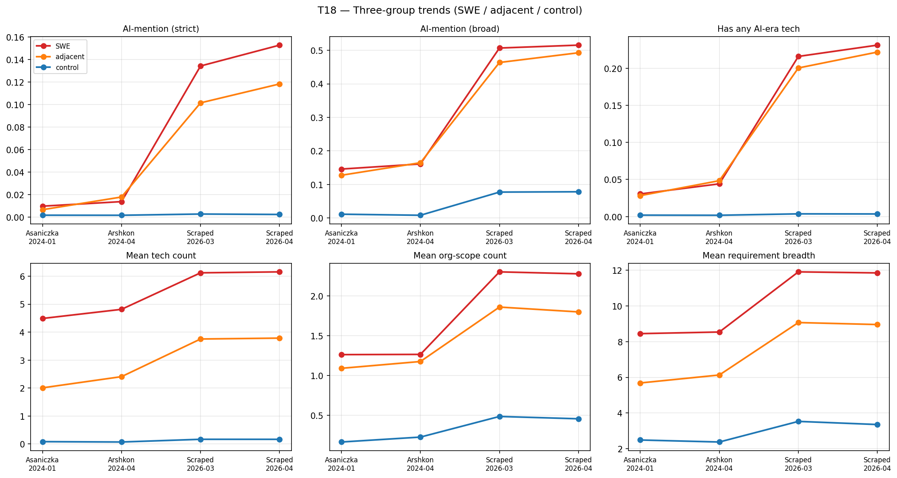
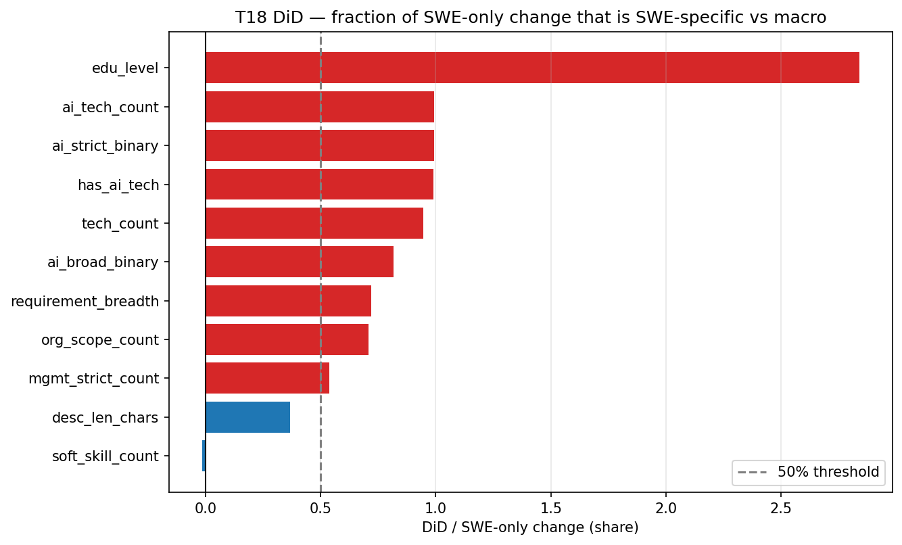
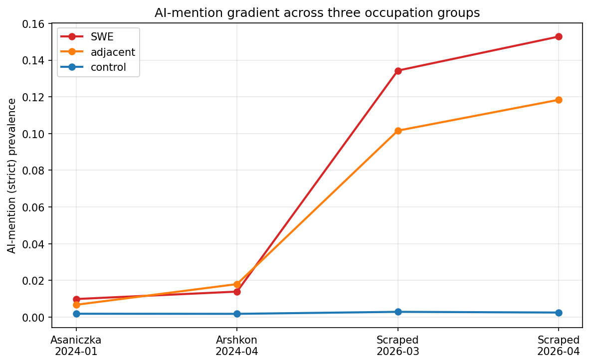

Finding 1 — SWE-specific AI-vocabulary rewriting¶
Claim¶
Between 2024 and 2026, US LinkedIn SWE postings added AI-tool vocabulary at a rate 99 percent specific to SWE versus control occupations (DiD), 102 percent attributable to the same 240 companies rewriting their own postings, cross-archetype (20 of 22), and geographically uniform (26 of 26 metros).
Core numbers¶
| Metric | 2024 | 2026 | Δ | Source |
|---|---|---|---|---|
| AI-strict (named tools: copilot, cursor, claude, RAG, langchain) | 1.5 % | 14.9 % | +13.4 pp | T08 |
| AI-broad (any AI/ML mention) | 7.2 % | 46.8 % | +39.6 pp | T08 |
| DiD — share of ai_strict rise attributable to SWE | — | — | 99 % | T18 |
| DiD — share of tech_count rise attributable to SWE | — | — | 95 % | T18 |
| Within-company share of AI rise (240-co panel) | — | — | 102 % | T16 |
| Metros with positive ai_strict Δ | — | — | 26 of 26 | T17 |
| Control-occupation ai_strict rate | 0.002 | 0.002 | flat | T18 |
Signal-to-noise ratios: 35.4 (strict), 24.7 (broad) — far above the within-2024 cross-source floor of SNR=1.
Key figures¶

T18 — AI-strict rate by occupation group and period. SWE and SWE-adjacent track together; control stays flat.
T18 — Difference-in-differences share of change attributable to SWE (vs control). 99% for ai_strict; 0% for soft_skills; 37% for description length.
T18 — Parallel-trends diagnostic: pre-2024 within-source drift in adjacent and control is small relative to the 2024-2026 SWE jump.What it rules out¶
- Field-wide template evolution. Control occupations did not gain AI vocabulary; SWE did. The rewrite is not a cross-occupation platform effect.
- Composition shift. 102% of the rise on the 240-company overlap panel is within-company, not between. The same companies rewrote their own postings.
- AI/ML archetype narrative. The rise spans 20 of 22 archetypes including backend, cloud/devops, frontend, QA — not just ML/AI. AI-strict rose everywhere except
systems_engineering(+0.16 pp, our natural control). - Geographic concentration story. 26 of 26 metros show positive Δ. Top surges are Tampa Bay (+20 pp), Atlanta (+18.6 pp), Charlotte (+17.2 pp) — Sunbelt finance/healthcare/aerospace, not tech hubs.
Sensitivities applied¶
- Aggregator exclusion — sharpens DiD by +10% on ai_broad (removes staffing-agency templating).
- Specialist exclusion — 240 entry-specialist companies excluded; result holds.
- Cap-50 per company — prevents any one company dominating the aggregate.
- Pooled-2024 baseline — matches arshkon-only direction.
- Labeled-only subset (LLM-frame) — direction holds.
- Authorship-score bottom-40% — retains 75-77% of the Δ (T29). Recruiter-LLM mediation is present but does not dominate.
Limitations¶
description_core_llmcoverage is 34,102 of 63,701 rows. Text-sensitive analyses restricted to the labeled frame; binary keyword presence on raw text extends recall.- The
ai_broadpattern has 0.80 precision. The V1-refined strict pattern is the primary, with broad as sensitivity. - 2026 is a JOLTS Info-sector hiring low. All claims are share-of-SWE, not volume.
- Recruiter-LLM mediation. T29 estimates 15-30% of the apparent shift is LLM-drafted text. AI-strict is the most robust to this cut; mentor/breadth are more method-sensitive.
Supporting evidence¶
- Technology co-occurrence: a 13-node LLM-vendor cluster (copilot, claude, langchain, rag, openai, mcp, huggingface, cursor, fine-tuning, gemini, llm_token, anthropic, agent_framework) at phi > 0.15 emerged in 2026; these were singletons in 2024. See T14.
- Description-extraction matches structured skills at Spearman ρ = 0.985. See T14.
systems_engineeringarchetype is the clean zero-AI natural control. See T28.